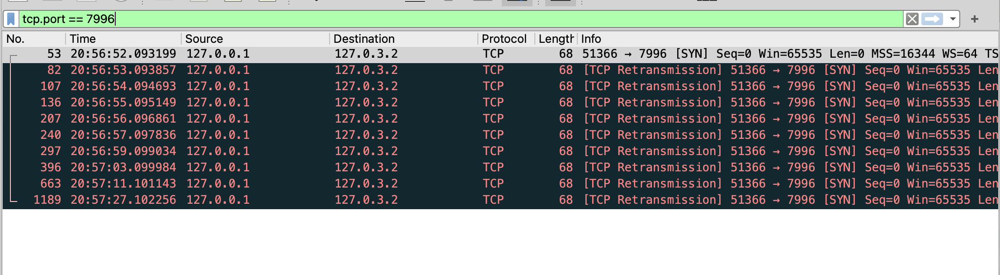
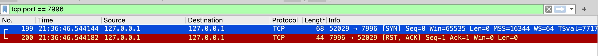

Health check using TCP
Hello ~
Today is a post about performing health check to manage a cluster of services using TCP, why TCP? Because I need to monitor a type of service which don't provide Restful API or anything similar.
My current project uses Golang, the easiest approach is to use http/net package to create a new TCP connection each time, the initial code might look like this:
func CheckTcpPort(host string, port string, timeoutSecond int) {
timeout := time.Second * time.Duration(timeoutSecond)
conn, err := net.DialTimeout("tcp", net.JoinHostPort(host, port), timeout)
if err != nil {
fmt.Println("connect failed: ", err)
}
if conn != nil {
defer func(conn net.Conn) {
_ = conn.Close()
}(conn)
}
}
Done? No, after deploying this code snippet to QA2 environment, I need to consider two further problems:
- If I have multiple instances, then how could I manage these jobs?
- Does the
dial functionblock?
For the first question, the answer is to use distributed lock method. Since this isn't the main topic of this post, let's move to the second question.
The answer of the second one is yes. dial function will be blocked if the destination doesn't return the SYN packet, for example:
- dial to a unkown IP address (I learned from my colleague :V).
- packet is dropped by firewall.
Dial to unkown ip address
I run above program and capture packet by wireshark tool:

A fews things that are worth analyzing:
SYNpacket is sent.- There is no response from the remote host because IP address
127.0.3.2is a undefined one. - TCP performs multiple retransmissions and the distance between retransmissions is based on an exponential backoff algorithm.
After a period of time (timeout), I know the health check is failed.
Packet is dropped by firewall
After asking ChatGPT, I know how to drop all TCP traffic on a specific port in a loopback network interface.
Update file /etc/pf.conf
block drop quick on lo0 proto tcp from any to any port 7995
then flush changes by 2 commands
sudo pfctl -f /etc/pf.conf
sudo pfctl -e
After testing again, wireshark doesn't capture any packets and the result is the same as previous section.
No listening process on a port
In this part, I will test with a normal ip address and a port that has no process listening on it.
Run above program with the destination IP 127.0.0.1 and port 7996, the result of wireshark:

because there is no process listening on port 7996, TCP stack sends RST packet to client, the client knows there is no service running on this port and the dial function is not blocked.
Having analysed these things, I need to be careful when setting the timeout value.
That's all ~